China Labor Law Guide for Foreign Employers (2026 Update)
Key takeaways
- This guide is written for foreign employers managing China HR and payroll risk in 2026.
- Local implementation details often matter more than high-level legal summaries.
- Strong governance depends on evidence quality, process timing, and cross-team ownership.
Overview
Labor law compliance in China remains a core operating requirement for foreign companies. This guide explains what matters most in practice, where implementation risk usually appears, and how to build a defensible HR control framework.
Regulatory context
China’s employment and payroll framework combines national legal principles with local implementation details. In practice, employers should avoid applying one static rule set to all cities, entities, and workforce groups. A more resilient model is to maintain a core policy baseline and local compliance annexes that are reviewed on a recurring schedule. This helps keep execution aligned with policy updates while reducing ambiguity for managers and payroll operators.
Employer impact analysis
For foreign companies, the operational cost of weak compliance is often indirect before it becomes direct. Early signs include frequent payroll exceptions, inconsistent manager decisions, employee confusion, and delayed escalations. Over time, these symptoms can translate into larger correction projects, relationship friction, and dispute vulnerability. The most effective response is not more paperwork alone, but better integration between legal interpretation, HR workflows, and payroll controls.
Practical control checklist
1. Assign clear owners for legal monitoring, payroll execution, and employee communication.
2. Maintain a monthly compliance review cadence with source-linked update notes.
3. Run simulation checks before high-impact policy or parameter changes go live.
4. Keep bilingual templates for high-risk lifecycle events and acknowledgments.
5. Archive evidence packs that connect policy, approvals, and execution outputs.
What to watch next
- Local guidance may continue to evolve unevenly, especially across major labor markets.
- Cross-border teams should expect increasing scrutiny on process consistency and data quality.
- Vendor performance evaluation is shifting from speed-only metrics to governance maturity.
FAQ
Is one national policy template enough for all China locations?
Usually not. A shared framework is useful, but local compliance adaptation is typically required.
What is the most important operating principle?
Consistency between policy language, manager behavior, and payroll execution records.
How often should employers refresh assumptions?
At least quarterly, with event-based updates when key notices are issued.
Disclaimer
Informational only; not legal, tax, or immigration advice.
Sources
- Ministry of Human Resources and Social Security (MOHRSS): http://www.mohrss.gov.cn/
- State Taxation Administration (STA): https://www.chinatax.gov.cn/
- National Immigration Administration: https://en.nia.gov.cn/
- International Labour Organization: https://www.ilo.org/
Need local employment support in China?
If you need a compliance-first Employer of Record (EOR) partner for hiring, payroll, and risk controls in China, China-Payroll.com can help your team evaluate the right setup.
Image Prompt Pack
Create a 16:9 hero image for article title: 'China Labor Law Guide for Foreign Employers (2026 Update)'. Scene: global operations team evaluating workforce model options for China market entry. Include motifs: decision matrix, org chart, legal policy documents…